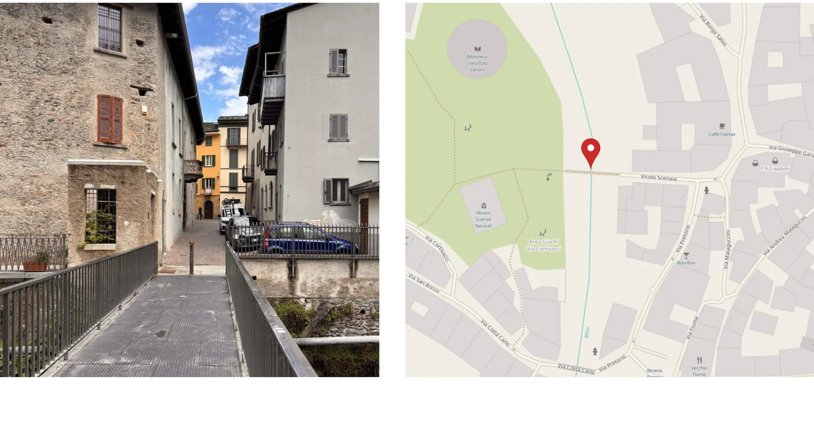
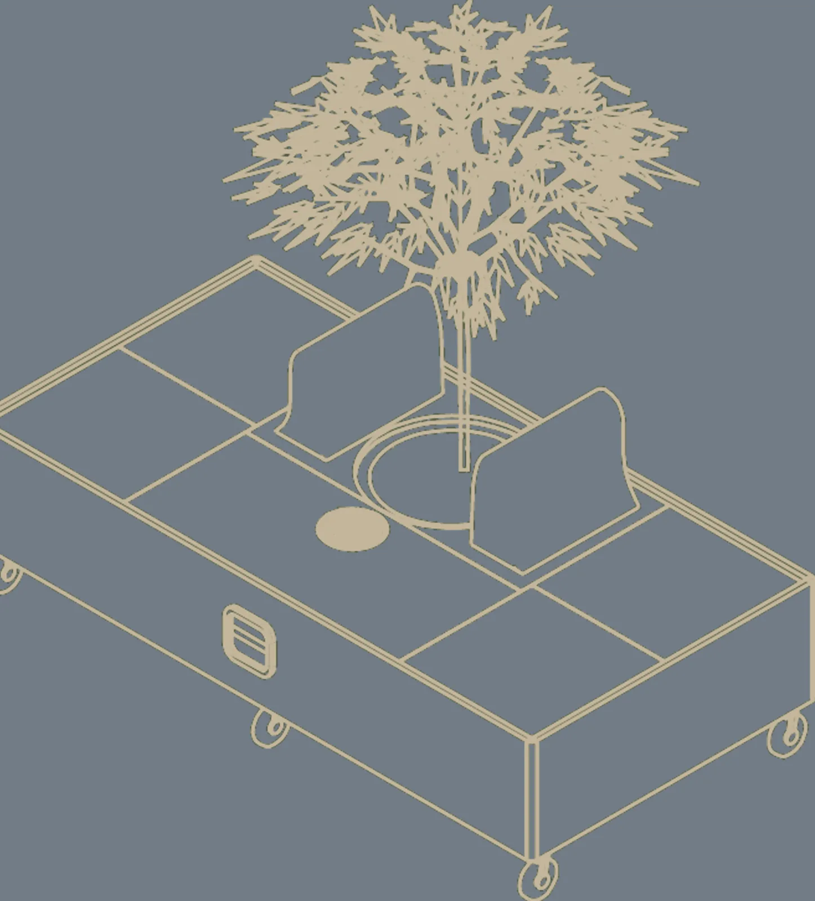

SOUNDPLACE
Un albero, due sedute, una possibilità.
- Corso
- Workshop interdisciplinare · Design degli Interni
- Sede
- Politecnico di Milano · A.A. 2025/26
- Docenti
- Elena Mariele Elgani, Elena Giunta
- Luogo
- Morbegno · Ponte Vanoni
- Modulo
- Walking Tree · 80 × 160 cm
- Gruppo
- Filippo Antonio Visentin, Francisco Junior Cuello Ramirez, Monow Sarkar
- Ambito
- Service design · Spazio pubblico · 2026

Qual è il minimo necessario per creare un luogo di incontro?
Progetto l’oggetto insieme al servizio: come si trova, come si usa e che cosa succede dopo.
Un luogo mobile per incontrarsi e condividere musica a Morbegno. Soundplace riprende l’idea del focolare come punto di ritrovo e la porta nello spazio pubblico.
Il modulo integra un albero e un risonatore passivo per smartphone, senza alimentazione elettrica. Lo storyboard descrive un servizio ipotizzato di prenotazione, attivazione e condivisione: l’oggetto diventa parte di un’esperienza collettiva.
Dal bisogno al dispositivo
La ricerca a Morbegno individua il bisogno di luoghi per incontrarsi e condividere musica in autonomia. Walking Tree risponde con un modulo mobile di 80 × 160 cm che integra un albero, due sedute e un risonatore passivo per smartphone.


Progettare l’esperienza completa
Il servizio proposto si articola in cinque fasi: primo contatto, prenotazione, attivazione, utilizzo e feedback. Il telefono aiuta a trovare e attivare il modulo; l’incontro tra persone resta al centro del progetto. Gli schizzi dell’app illustrano la proposta di servizio.
Il modulo che sostiene il servizio
Disegni e materiali di progettoLa tavola di concept mette insieme albero, sedute e risonatore. Accanto allo storyboard, permette di leggere il rapporto tra l’oggetto fisico e l’esperienza di incontro e ascolto proposta da Soundplace.
Concept di Walking Tree · progetto di gruppo
Processo — disegni
1 disegno
F.03Walking Tree — assonometria